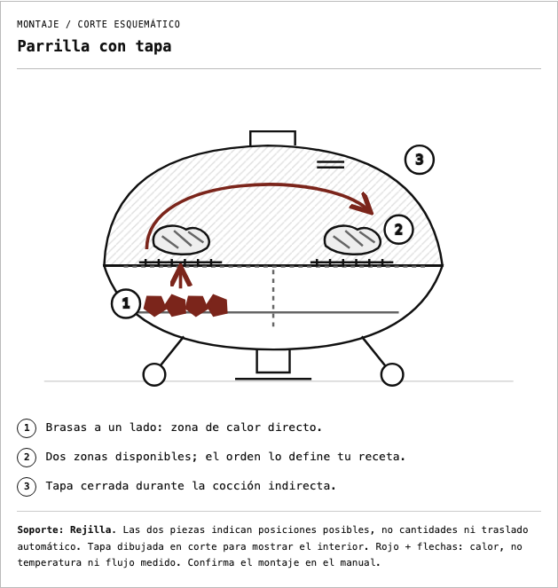
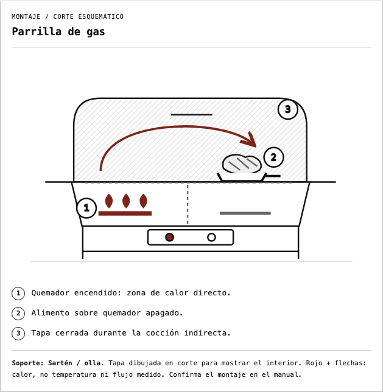
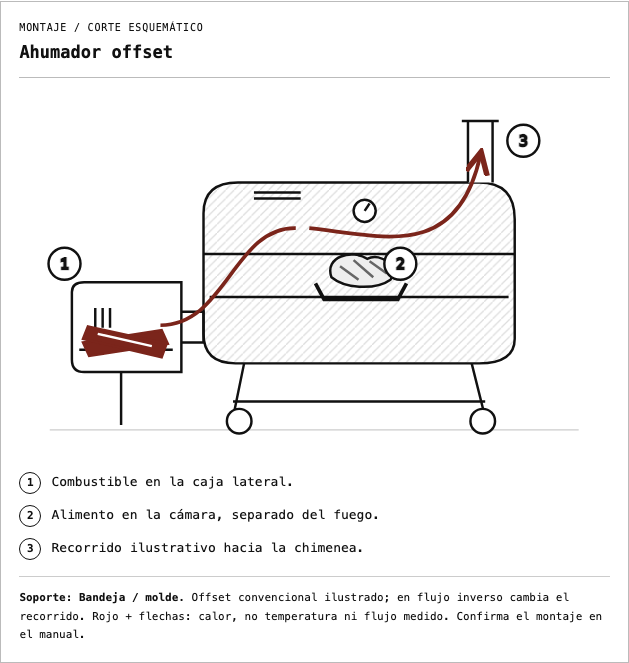

2026-10-05 · Implementación local; pendiente de aprobación visual del usuario. No publicada.
Alcance: parrilla con tapa (directo, indirecto y combinado), gas (directo, indirecto y combinado) y offset convencional indirecto. Las demás familias y modos offset mantienen su ilustración anterior. Se preservan reglas de combustible, validación, etapas y almacenamiento.
Compilación y TypeScript: PASS. Ocho pruebas del modelo: PASS. Doce recorridos del piloto en 320, 390, 768 y 1440 px: PASS; controles de desbordamiento, leyenda, montaje por etapa, guardado, modal y ausencia de IDs duplicados. Inspección visual de los tres diagramas móviles, parrilla de escritorio y offset con CSS de impresión. No se validó paginación física del PDF en esta revisión.
Prueba reproducible: portal/scripts/check-planner-diagrams.py. Capturas aisladas excluyen el botón global flotante del Almanaque; la superposición global ya registrada en v4 sigue pendiente.
Las flechas son una abstracción explicativa propia; no representan velocidades, temperaturas ni simulación del flujo.


